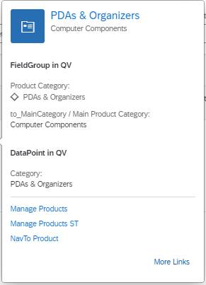
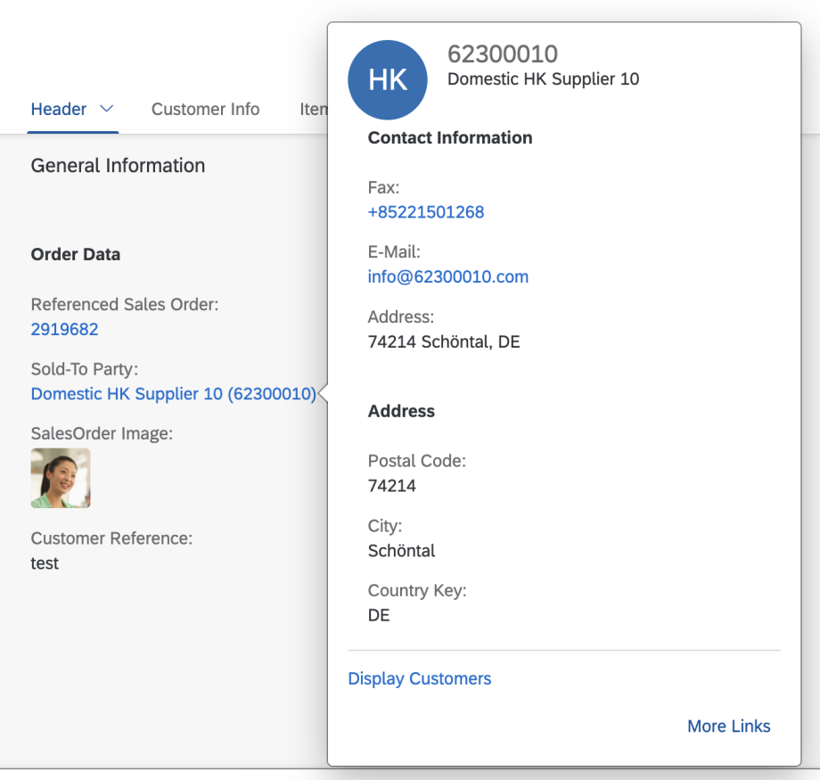

The content area, consisting of a title and additional information, for example, a field group, has a default behavior and can be adapted to your needs.
Images
To display an image, annotate
HeaderInfo.ImageUrl or
HeaderInfo.TypeImageUrl. If you don't,
no image is displayed.
If you annotate HeaderInfo.ImageUrl and
HeaderInfo.TypeImageUrl,
ImageUrl is evaluated first, and
TypeImageUrl second. The
ImageUrl/TypeImageUrl string and path
including navigation properties are evaluated.
Title
Enter the title according to the
TextArrangement annotation. See the
figure below: TextArrangementType/TextLast.
Note that Computer Systems is
declared as TextLast here.
If a main navigation has been defined, the title is displayed as a link. In the example below, see the Asia High tech link:
The description is always displayed beneath the title and
must be filled according to the
TextArrangement annotation.
If the description is not filled, the title size is increased
automatically and the description field remains empty, as
shown below
(TextArrangementType/TextOnly).
The content area can contain field groups, contacts, and Data.Points.
You can include any number of field groups or none at all. The example below shows a quick view with no reference facet, however, a header image included:
A field group can have a label. It is taken from the from within
the <Record Type="UI.ReferenceFacet">.
-
For fields, the path including navigation properties is evaluated.
-
Fields support annotations such as IsEmailAddress,
IsUrl, and IsPhoneNumber. Note that
any links that would create a popover on the quick view are ignored by the
system.
-
There are different types of content for field groups:
-
Interpreted by SmartField:
DataField including criticality,
DataFieldWithUrl
-
Interpreted by SAP Fiori elements:
DataFieldWithIntentBasedNavigation
Contacts
You can display any number of contacts or none at all. See the example below:
The following applies:
-
You can place the contact anywhere. It is specified by the position
of the reference facet in the collection.
-
If the picture, title, and description belonging to a contact
(contact title area) correspond with the content of the title area ,
the contact title area is not displayed.
-
The reference facet must point to a
com.sap.vocabularies.Communication.v1.Contact.
DataPoints
-
You can place an existing DataPoint in your annotation.
-
You can place the DataPoint anywhere. It is specified by the position of
the reference facet in the collection.
-
A DataPoint can have a label. It is taken from within the
<Record Type="UI.ReferenceFacet">.

The sample code shows a quick view facet containing field group, contact and
DataPoint:
<Annotations Target="STTA_PROD_MAN.STTA_C_MP_SupplierType">
<Annotation Term="UI.QuickViewFacets">
<Collection>
<Record Type="UI.ReferenceFacet">
<PropertyValue Property="Target" AnnotationPath="@UI.FieldGroup#SupplierQuickViewPOC_FieldGroup_1" />
</Record>
<Record Type="UI.ReferenceFacet">
<PropertyValue Property="Label" String="Main Contact Person" />
<PropertyValue Property="Target" AnnotationPath="@Communication.Contact#KeyAccount"/>
</Record>
<Record Type="UI.ReferenceFacet">
<PropertyValue Property="Label" String="DataPoint in QV"/>
<PropertyValue Property="Target" AnnotationPath="@UI.DataPoint#Product"/>
</Record>
</Collection>
</Annotation>
</Annotations>
Title Area
-
Images
-
If you don’t provide HeaderInfo.ImageUrl or
HeaderInfo.TypeImageUrl, you can
provide initials in the HeaderInfo.Initials
annotation. The initials will be displayed if no
HeaderInfo.ImageUrl or
HeaderInfo.TypeImageUrl is
provided.
-
If no HeaderInfo.ImageUrl,
HeaderInfo.TypeImageUrl, or
HeaderInfo.Initials is provided, no
image will be displayed
-
Title
-
The title is taken from
HeaderInfo.Title.
-
If a main navigation has been defined, the title is displayed
as a link. In the example below, see the
Asia High
tech link:
- Description
-
The description is taken from the
HeaderInfo.Description annotation.
-
Content Area
The content area can contain field groups, contacts, and DataPoints.
Field Groups
-
You can include any number of field groups or none at all. The example
below shows a quick view with no reference facet, however, a header
image included:
-
A field group can have a label. It is taken from within the <Record
Type="UI.ReferenceFacet">.
-
For fields, the path including navigation properties is evaluated.
-
Fields support annotations such as IsEmailAddress, IsUrl,
and IsPhoneNumber. Note that any links that would
create a popover on the quick view are ignored by the system.
-
There are different types of content for field groups:
-
Interpreted by SmartField:
DataField including criticality,
DataFieldWithUrl
-
Interpreted by SAP Fiori elements:
DataFieldWithIntentBasedNavigation
Contacts
You can display any number of contacts or none at all. See the example below:

The following applies:
-
You can place the contact anywhere. It is specified by the position
of the reference facet in the collection.
-
If the picture, title, and description belonging to a contact
(contact title area) correspond with the content of the title area ,
the contact title area is not displayed.
-
The reference facet must point to a
com.sap.vocabularies.Communication.v1.Contact.
DataPoints
-
You can place an existing DataPoint in your annotation.
-
You can place the DataPoint anywhere. It is specified by the position of
the reference facet in the collection.
-
A DataPoint can have a label. It is taken from within the
<Record Type="UI.ReferenceFacet">.
The sample code shows a quick view facet containing field group, contact and
DataPoint:
<Annotations Target="STTA_PROD_MAN.STTA_C_MP_SupplierType">
<Annotation Term="UI.QuickViewFacets">
<Collection>
<Record Type="UI.ReferenceFacet">
<PropertyValue Property="Target" AnnotationPath="@UI.FieldGroup#SupplierQuickViewPOC_FieldGroup_1" />
</Record>
<Record Type="UI.ReferenceFacet">
<PropertyValue Property="Label" String="Main Contact Person" />
<PropertyValue Property="Target" AnnotationPath="@Communication.Contact#KeyAccount"/>
</Record>
<Record Type="UI.ReferenceFacet">
<PropertyValue Property="Label" String="DataPoint in QV"/>
<PropertyValue Property="Target" AnnotationPath="@UI.DataPoint#Product"/>
</Record>
</Collection>
</Annotation>
</Annotations>